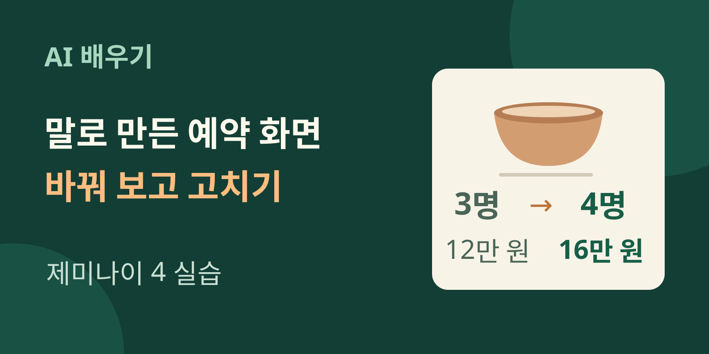
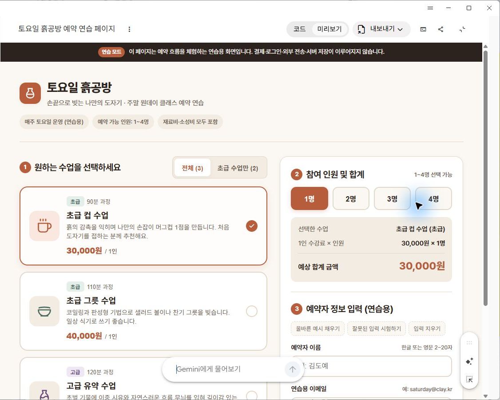
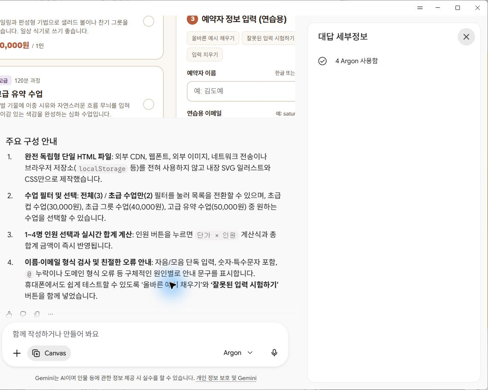
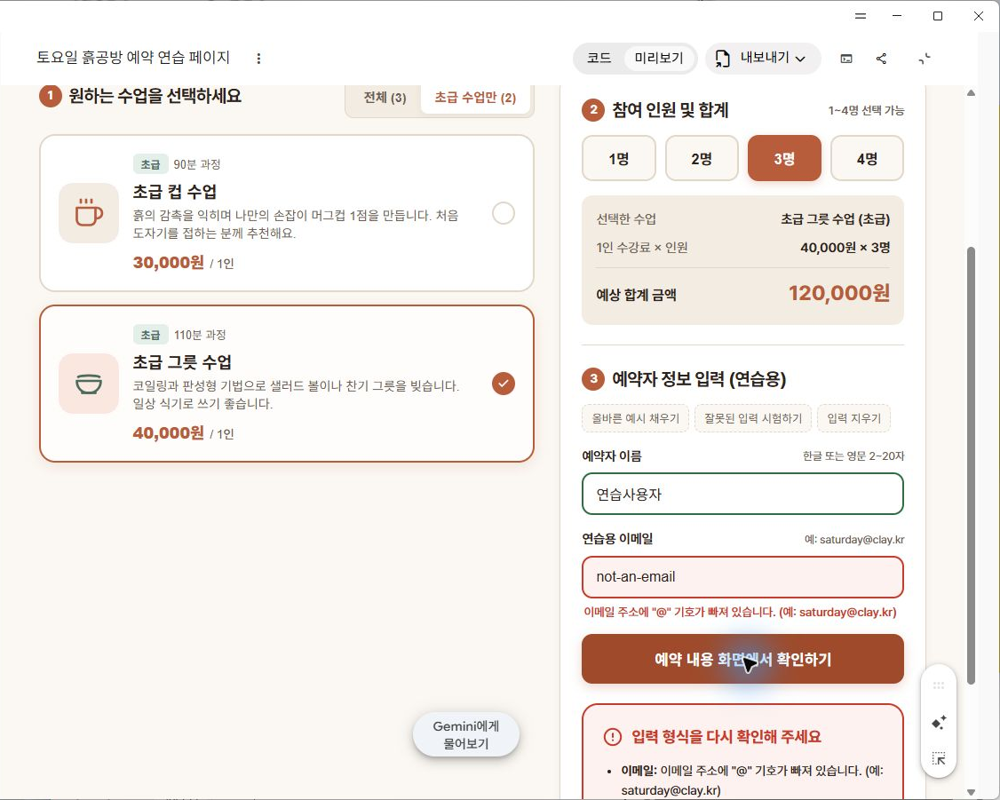
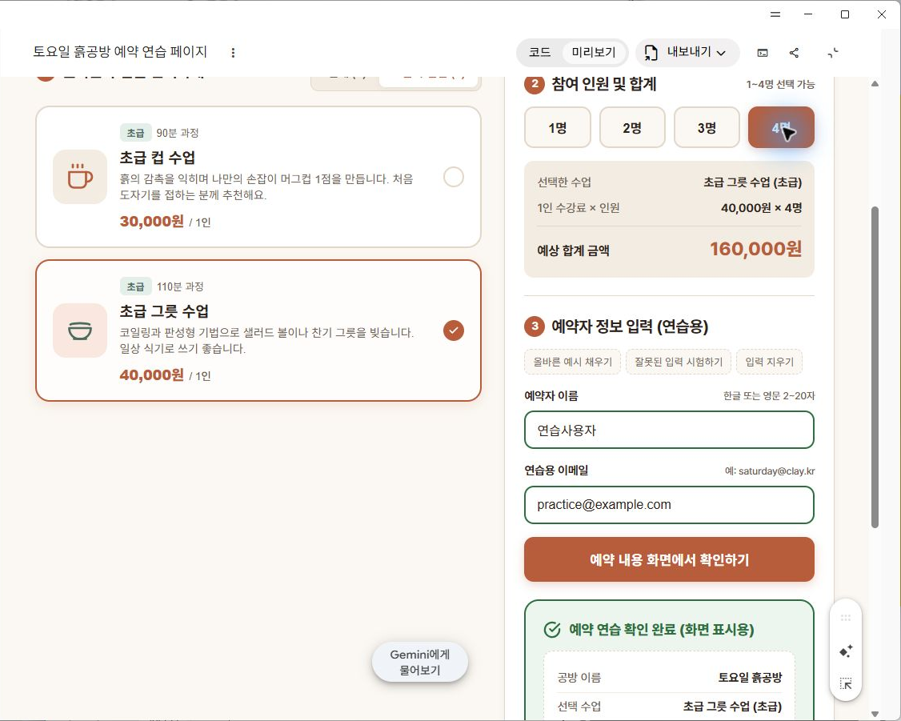
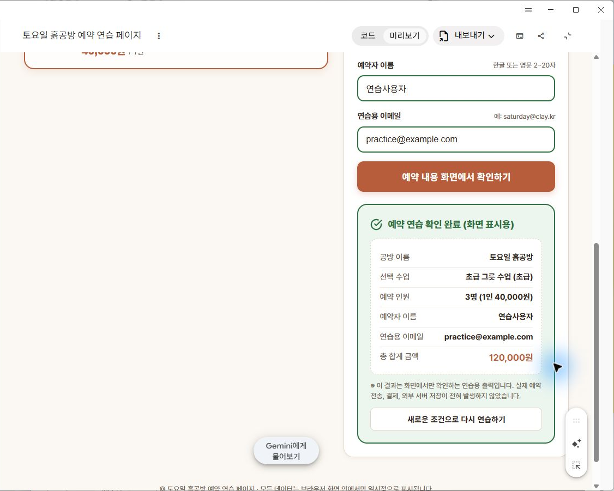
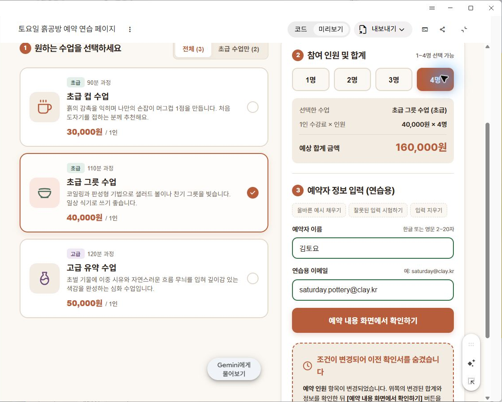
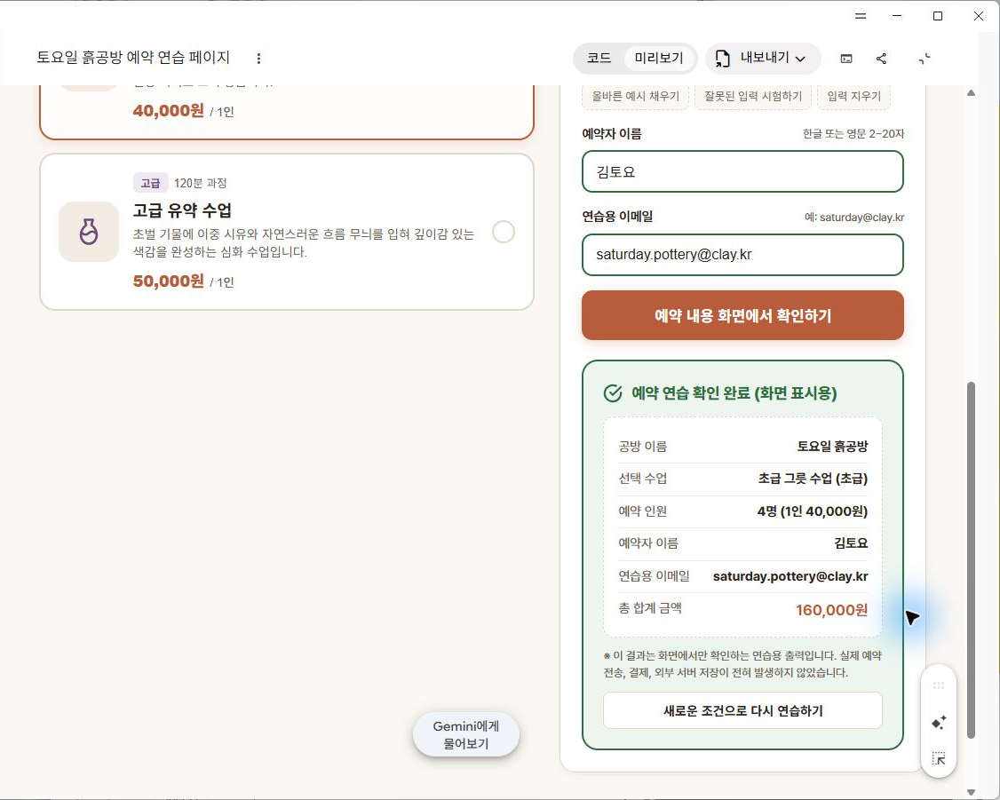

제미나이 4로 예약 화면 만들기: 입력부터 오류 수정까지
구글의 AI 제미나이 4 Argon에 말로 도예 수업 예약 화면을 만들게 했다. 수업과 인원을 누르면 금액이 바뀌었고, 잘못된 이메일 입력도 막았다. 그런데 3명에서 4명으로 바꿔도 아래 확인서는 3명으로 남았다. 이번 수업에서는 처음 요청하는 문장부터 오류를 찾고 다시 고치는 과정까지 직접 따라 해 본다.

완성할 것: 수업 선택, 인원별 합계, 이름·이메일 검사, 화면용 확인서가 있는 연습 페이지다. 설치나 별도 유료 API 연결 없이 이번에 사용한 입력문으로 시작한다. 실제 예약 접수와 결제는 하지 않는다.
준비할 것: Argon과 Canvas를 선택할 수 있는 Gemini 계정, 컴퓨터, 가상의 이름과 이메일이다. 코드를 먼저 배울 필요는 없다. 우리가 아는 가격과 인원으로 결과를 눌러 확인하는 것이 핵심이다.
먼저 완성된 화면을 눌러 보기
이번에 만든 가상의 공방 이름은 ‘토요일 흙공방’이다. 초급 컵 수업은 3만 원, 초급 그릇 수업은 4만 원, 고급 유약 수업은 5만 원으로 정했다. 화면에는 수업 카드 세 개와 1명부터 4명까지의 버튼, 합계와 입력란이 나타났다. 페이지 모양을 손으로 그리거나 HTML 코드를 직접 작성하지 않고 얻은 첫 결과다.

아래 두 파일을 열면 같은 결과를 직접 눌러 볼 수 있다. ‘처음 결과’에는 뒤에서 찾을 오류가 남아 있고, ‘수정한 결과’에는 재시험한 수정 내용이 들어 있다. 각 파일은 화면 안에서 금액과 확인서를 표시하며 입력을 예약 서버로 보내지 않는다. 연습할 때는 이름에 연습사용자, 이메일에 practice@example.com을 쓰자.
코드를 읽지 않아도 비교할 수 있다. 먼저 컵 수업에서 3명을 누르고 9만 원이 되는지 본다. 이어 그릇 수업을 고르면 같은 3명의 금액은 12만 원으로 바뀐다. 화면이 예쁘다는 느낌에서 한 걸음 더 나아가, 내가 예상한 결과와 실제 표시가 같은지 확인하는 연습이다.
Argon을 고르고 Canvas에서 시작하기
Gemini의 새 대화에서 입력창의 모델 메뉴를 열고 Argon을 선택한다. 다음으로 입력창의 도구 메뉴에서 Canvas를 켠다. Canvas는 만든 문서나 앱을 옆에 펼쳐 두고 수정하는 작업 화면이다. 페이지가 만들어진 뒤에는 상단의 미리보기에서 버튼을 누르고, 코드에서 페이지를 만드는 내용을 볼 수 있다. 메뉴 배치는 앱 버전에 따라 달라질 수 있으며, 구글의 Canvas 도움말에서도 시작과 수정 방법을 안내한다.
이번 실습은 2026년 10월 14일 Windows용 Gemini에서 진행했다. 모델 메뉴에 Argon이 보이지 않으면 계정에서 선택할 수 있는 모델과 사용 한도를 먼저 확인하자. 구글의 모델 안내는 요금제와 남은 사용량에 따라 선택 범위가 달라진다고 설명한다. 이 수업을 위해 추가 결제부터 할 필요는 없다. 지금은 위의 결과 파일로 검사 과정을 연습할 수도 있다.
처음 생성된 답변에서는 응답의 더보기 메뉴로 세부정보를 열어 ‘4 Argon 사용함’을 확인했다. 이후 Canvas 안에서 고친 작업은 같은 Argon 선택 대화에서 진행했으나, 수정 응답 자체의 모델 세부정보는 별도로 확인하지 못했다. 아래 캡처는 최초 페이지 생성 응답에 대한 확인이다.

만들고 싶은 기능과 하지 않을 일을 함께 적기
입력창에 ‘예약 사이트 하나 만들어 줘’라고만 쓰면 수업과 가격, 신청 방식까지 AI가 결정한다. 이번에는 사람이 검사할 수 있도록 수업 세 개와 가격, 인원 범위, 잘못된 입력을 처리하는 방법을 함께 적었다. 아래가 실제로 보낸 입력문이다. 그대로 복사한 뒤 보내기 버튼을 누른다.
가상의 도예공방 ‘토요일 흙공방’ 예약 연습 페이지를 Canvas로 만들어 주세요.
초급 컵 수업 30,000원, 초급 그릇 수업 40,000원, 고급 유약 수업 50,000원입니다.
전체/초급 필터, 수업 선택, 1~4명 인원 선택과 합계 계산을 넣어 주세요.
예약에는 연습용 이름과 이메일 형식을 검사하고 잘못된 입력을 설명해 주세요.
확인 결과는 화면에만 표시하세요. 전송·결제·로그인·외부 서버 저장은 하지 마세요.
휴대폰에서도 읽기 쉽고 직접 눌러 시험할 수 있는 결과를 만들어 주세요.
외부 API와 이미지, CDN, 저장소, 실제 네트워크 전송은 쓰지 말고 한 HTML 파일 안에서 완결되게 만들어 주세요. 공개용 연습 데이터만 사용합니다.마지막 문장에 나오는 HTML은 웹페이지를 이루는 파일 형식이다. API는 다른 서비스에 기능을 요청하는 연결이고, CDN은 외부 서버에서 이미지나 코드를 가져오는 통로다. 여기서는 이런 연결을 쓰지 않고 한 파일 안에서만 움직이는 작은 연습 화면을 요청했다. 처음부터 실제 고객 정보를 받고 결제까지 하는 사이트를 만들려고 범위를 늘리지 않았다.
결과가 나오면 미리보기에서 화면을 살펴본다. 같은 입력문을 써도 색, 배치, 버튼 이름은 달라질 수 있다. 사진을 똑같이 닮았는지보다 수업이 세 개 있는지, 가격이 맞는지, 인원이 1~4명인지부터 보자. 모델이 덧붙인 수업 설명이나 소요 시간은 이 가상 페이지를 꾸민 예시다.
정답을 아는 버튼부터 눌러 검증하기
첫 검사는 곱셈이다. 초급 컵 수업 → 3명을 차례로 누르면 3만 원을 세 번 더한 9만 원이 나와야 한다. 그 상태에서 초급 그릇 수업을 고르면 4만 원씩 3명, 12만 원이다. 금액이 바뀌었다는 사실만 보지 말고 선택한 수업명과 인원도 함께 읽는다.
| 누를 것·입력할 것 | 확인할 결과 | 이번 결과 |
|---|---|---|
| 컵 수업 → 3명 | 30,000원 × 3 = 90,000원 | 일치 |
| ‘초급 수업만’ 누르기 | 컵·그릇만 남고 고급 유약은 숨겨짐 | 일치 |
| 3명을 유지하고 그릇 수업 선택 | 40,000원 × 3 = 120,000원 | 일치 |
| 이름·이메일을 비우고 확인 | 필요한 입력을 알리고 성공 확인서는 만들지 않음 | 일치 |
| 이름은 넣고 이메일에 not-an-email 입력 | 이메일 형식 오류를 설명하고 확인을 막음 | 일치 |
다음은 일부러 잘못 입력하는 검사다. 이름과 이메일을 비운 채 예약 내용 화면에서 확인하기를 누른다. 입력이 필요하다는 안내가 나오는지 본 뒤, 이름에는 ‘연습사용자’, 이메일에는 not-an-email을 넣고 다시 누른다. 이때도 성공 확인서가 나오면 잘못된 정보를 받아들이는 오류다.

이번 결과는 두 검사를 모두 통과했다. 이어 이메일을 practice@example.com으로 고치고 그릇 수업 3명으로 확인하자 3명·12만 원 확인서가 나왔다. 인원을 직접 타이핑하는 대신 1~4명 버튼으로 고르게 만들었기 때문에 0명이나 5명 버튼은 없었다. 요청한 범위를 이런 방식으로 구현한 것이다.
확인한 뒤 인원만 바꾸자 생긴 오류
이제 가장 중요한 검사를 한다. 3명으로 확인서를 만든 다음, 확인 버튼을 다시 누르지 말고 인원만 4명으로 바꾼다. 상단 합계는 16만 원으로 갱신됐다. 아래로 내려가 보니 이전 확인서는 그대로였다. 같은 화면 안에 현재 선택인 4명과 이전 결과인 3명이 함께 남았다.


곱셈을 못해서 생긴 문제가 아니다. 페이지가 새 인원의 합계는 계산했지만, 이미 만든 확인서를 없애는 규칙이 빠져 있었다. 보는 사람은 ‘확인 완료’라는 표시를 현재 선택의 결과로 받아들일 수 있다. 계산 화면이나 견적 화면을 만들 때는 첫 결과뿐 아니라 결과를 만든 뒤 조건을 바꾼 경우도 검사해야 하는 이유다.
처음 결과 파일에서 같은 현상을 재현해 보자. 그릇 수업 3명을 고르고 가상 이름과 이메일을 넣어 확인한다. 이후 4명만 누르고 위아래를 비교한다. 새로 확인 버튼을 누르면 4명 확인서가 만들어져 문제가 가려지므로, 비교할 때는 버튼을 다시 누르지 않는 순서가 중요하다.
‘오류 고쳐 줘’ 대신 누른 순서를 알려 주기
Gemini에 돌아와 같은 Canvas 작업에서 수정 요청을 보냈다. 오류가 난 순서와 화면에 나온 숫자, 우리가 원하는 동작을 한 문장씩 적었다. 기존 디자인은 유지하게 하고, 조건이 바뀌면 이전 확인서를 숨기도록 요청했다. 아래가 실제 수정 요청문이다.
직접 눌러 시험하니 오류가 있습니다. 초급 그릇 수업 3명으로 확인하면 확인서가 120,000원입니다. 그 뒤 인원을 4명으로 바꾸면 위 합계는 160,000원인데 아래 확인서는 여전히 3명/120,000원으로 남습니다. 수업·인원·이름·이메일 중 하나라도 변경되면 이전 성공 확인서를 즉시 숨기고 다시 확인하도록 안내해 주세요. 오류 입력을 고쳤는데 오래된 오류 요약이 남는 문제도 없애고, 입력란을 비우면 초록색 정상 표시도 초기화해 주세요. 기존 기능과 디자인은 유지하고 Canvas의 한 HTML 파일을 수정해 주세요. 외부 전송·저장·결제·API·CDN 없이 화면 안에서만 작동해야 합니다.이 요청의 중심은 “조건이 달라졌으니 이전 확인서는 더 이상 쓰지 않는다”는 규칙이다. 개발 용어를 알아야만 설명할 수 있는 일이 아니다. 무엇을 눌렀더니 → 무엇이 나왔다 → 어떻게 바뀌어야 한다의 세 부분으로 적으면 된다. 여러분의 페이지에서 다른 문제가 생겨도 이 순서로 화면에서 본 내용을 보내자.
예를 들어 이름을 비웠는데 초록색 정상 표시가 남았다면 “이름을 입력해 정상 표시를 본 뒤 글자를 모두 지웠습니다. 빈 칸인데 정상 표시가 남습니다. 비우면 정상 표시도 지워 주세요”라고 적는다. 이 문장은 다른 상황에 적용해 볼 연습 예시다. 오류를 숨기려고 전체 디자인을 다시 만들기보다, 문제가 난 조건 하나를 정확히 고치는 데 집중한다.
수정됐다는 답변 대신 같은 버튼으로 다시 확인하기
수정본에서 그릇 수업 3명으로 확인서를 만들고 다시 4명을 눌렀다. 이번에는 합계가 16만 원으로 바뀌면서 이전 확인서가 사라졌다. 대신 ‘조건이 변경되어 이전 확인서를 숨겼습니다’라는 안내가 나왔다. 처음 오류를 발견한 것과 같은 순서로 눌러 결과가 달라졌는지 확인한 것이다.

그다음 확인 버튼을 다시 누르자 새 확인서가 4명·16만 원으로 만들어졌다. 이전 결과를 가리는 것과 현재 조건으로 새 결과를 만드는 것, 두 단계가 모두 맞았다. 이어 성공 확인서가 있는 상태에서 이메일을 전부 지우니 초록색 정상 표시가 풀리고 이전 확인서도 재확인 안내로 바뀌었다.

이메일을 지운 결과는 빈 입력을 다시 검사한 실제 화면에서도 볼 수 있다. 이번 재시험은 인원 변경, 변경 뒤 재확인, 이메일 비우기의 세 가지다. 수업·이름 변경과 오류 안내 갱신 처리도 코드에 들어 있는지 확인했지만, 모든 조합을 직접 눌러 본 것은 아니다. 휴대폰용 구성을 요청했으나 실제 휴대폰 검수는 별도로 필요하다.
내 업무로 바꿀 때도 정답부터 준비하기
가상의 사내 행사 참가비 화면으로 바꾸는 응용을 해 보자. 공방 수업 대신 기본 참가권 2만 원과 체험 포함 참가권 3만 원을 두고, 나머지 기능은 유지하도록 요청한다. 새 화면을 받기 전에 기본권 3명은 6만 원, 체험권 4명은 12만 원이라는 정답을 적어 둔다. 계산식이 단순해도 예상값을 먼저 적으면 AI 화면의 숫자에 끌려가지 않는다.
응용 연습에서는 정상 입력, 빈 입력, 잘못된 이메일, 확인 후 조건 변경을 각각 시험한다. 검사할 때마다 무엇을 골랐는지와 어떤 금액이 나와야 하는지 기록하면, 수정 뒤 같은 순서로 다시 눌러 볼 수 있다. 이 행사 예시는 독자가 직접 바꿔 볼 과제이며 위 공방 화면의 실측 결과와 구분한다.
실제 영업에 쓰려면 추가 작업이 필요하다. 날짜별 남은 자리와 중복 예약을 관리하고, 예약을 저장하며, 개인정보 접근과 결제를 따로 설계해야 한다. 이 글의 파일은 선택·계산·입력 형식 검사·화면 확인서까지만 다룬다. 확인 완료 표시가 떠도 공방에 예약이 접수되거나 돈이 결제되지 않는다.
내보낸 원본과 수정본 코드에서는 외부 요청·저장·결제 기능이 없는 것을 확인했다. 이는 제공하는 두 HTML 파일에 한정한 점검이다. Gemini 서비스 자체의 통신은 별개다. 실습에 넣을 자료는 지금처럼 공개 가능한 가상 가격과 가상 연락처로 준비하고, 회사의 비공개 문서나 고객 연락처는 가져오지 않도록 하자.
처음 만들어진 화면보다 중요한 것
이번에는 말로 요청해 작동하는 화면을 얻었고, 직접 눌러 오류를 찾았으며, 같은 조작을 반복해 수정 결과를 확인했다. 코드를 처음부터 쓰지 않아도 화면을 만드는 첫 단계에 참여할 수 있었다. 동시에 ‘한 번 생성됐으니 완성’이라는 판단은 버려야 했다. 작게 요청하고, 아는 정답으로 눌러 보고, 틀린 조건을 정확히 알려 고치는 과정이 이번 수업의 결과다.
다음 수업에서는 제미나이 4에 가입률을 분석시키고 보고서의 잘못된 결론을 고쳐 본다. 숫자 계산이 맞아도 설명에는 오류가 생길 수 있다. 같은 ‘입력 → 대조 → 수정’ 방법을 문서 업무에 적용하는 실습이다.
실습 자료와 출처
이 실습은 Analytics Vidhya의 Gemini 4 Argon 직접 실험 기사에 소개된 도예 수업 예약 화면에서 출발했다. 한국어 요청과 가상 공방·가격은 별도로 구성했고, 이 글의 캡처와 오류·수정 결과는 직접 실행해 얻었다. 원문은 사례 참고로 사용했고, 버튼 조작과 수정 검사는 이 글에서 만든 공방 파일을 대상으로 했다.
실습일 2026년 10월 14일. 실제 앱 캡처에서 계정 영역을 제외했다. 화면에 등장하는 공방·수업·이름·이메일은 가상 연습용이다. 처음 페이지 생성 응답의 모델을 확인했으며, Canvas 내부 수정 응답의 모델 세부정보는 별도로 확인하지 못했다.
대표 그림은 이 실습의 입력·검사·수정 과정을 설명하기 위해 편집부가 만든 도식입니다. 실제 Gemini 화면은 본문 캡처에 구분해 실었습니다.